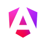

Erick Guerra
Desenvolvedor


Sobre mim
Com apenas 19 anos, sou um jovem de Santa Maria de Itabira, MG, determinado a explorar o vasto universo da tecnologia. Como estudante de Engenharia de Software, meu interesse pelo desenvolvimento me levou a buscar conhecimento através de cursos online, como os oferecidos pela ALURA. Com um olhar curioso e determinado, estou pronto para explorar as oportunidades que o mundo digital oferece.
Skills
- Java Spring
- Angular
- TypeScript
- HTML

- CSS

- JavaScript

Projetos
-
Ponto Eletrônico
Desenvolvido com Java Spring e Angular, o sistema integra um ESP32 para capturar o UID dos cartões e enviá-lo para a API, sendo criado especificamente para a empresa Fundação Francisco de Assis, onde atuo atualmente. O sistema conta com um eficiente mecanismo de login, diferenciando permissões entre Administradores e Funcionários. Além disso, oferece funcionalidades completas de CRUD para o cadastro de usuários, bem como para a abertura e fechamento de ponto.
Administrador:
email: administrador@ponto.com
senha: 1234Funcionário:
email: funcionario@ponto.com
senha: 1234 -
Consumo Combústivel
Desenvolvido com Java Spring e Angular, o sistema monitora o consumo de combustível, gerando relatórios detalhados por período para cada automóvel.
-
Luminous Studio
Desenvolvido com Angular, uma landing page simples e bonita!